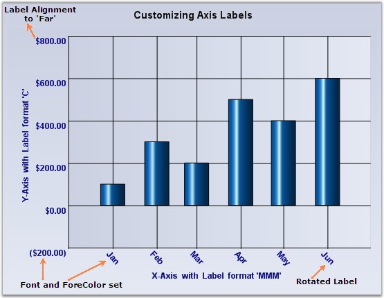

By default, the label texts are automatically determined based on the axis data points and the generated intervals. You can better the format, look and positioning of the labels using the properties listed below.
|
ChartAxis Property |
Description |
|
Format |
If the data points are double values then use this property to specify the format in which to render the double value. The specified format will be used in the Double.ToString method to arrive at the formatted string. Search MSDN documentation for Standard Numeric Format Strings for more information on the format strings. |
|
DateTimeFormat |
If the data points are DateTime values, then use this property to specify the format in which to render the date. The specified format will be used in the DateTime.ToString() method to arrive at the formatted string. Search MSDN documentation for Date and Time Format Strings for more information on the format strings. |
|
ForeColor |
Affects the labels and other text colors that gets rendered in the axis. |
|
Font |
Specifies the font to use for label and other texts that get rendered in the axis. By default it is set to Trebuchet, 9, regular. |
|
ScaleLabels |
Setting this to true will automatically resize the text if the chart size is expanded by the user. |
|
LabelAlignment |
Specifies if the label should be rendered Near, Far or Center within the available area. Default is Center. |
|
LabelRotate |
Specifies whether or not labels should be rotated. Use the LabelRotateAngle to specify the angle. |
|
LabelRotateAngle |
If LabelRotate is true, this property specifies the angle of rotation. |

Figure 257: Axis Label Customization
|
[C#]
//Settings datetime format to Xaxis this.chartControl1.PrimaryXAxis.DateTimeFormat = "MMM";
//Settings format to Yaxis this.chartControl1.PrimaryYAxis.ValueType = ChartValueType.Double; this.chartControl1.PrimaryYAxis.Format = "C";
//setting ForeColor and Font to axes labels this.chartControl1.PrimaryXAxis.ForeColor = System.Drawing.Color.Navy; this.chartControl1.PrimaryXAxis.Font = new System.Drawing.Font("Arial", 9F, System.Drawing.FontStyle.Bold); this.chartControl1.PrimaryYAxis.ForeColor = System.Drawing.Color.Navy; this.chartControl1.PrimaryYAxis.Font = new System.Drawing.Font("Arial", 9F, System.Drawing.FontStyle.Bold);
//Label property settings for X-Axis this.chartControl1.PrimaryXAxis.LabelAligment = System.Drawing.StringAlignment.Center; this.chartControl1.PrimaryXAxis.LabelRotate = true; this.chartControl1.PrimaryXAxis.LabelRotateAngle = 45;
//Label property settings for Y-Axis this.chartControl1.PrimaryYAxis.LabelAligment = System.Drawing.StringAlignment.Far; |
|
[VB]
'Settings datetime format to Xaxis Me.chartControl1.PrimaryXAxis.DateTimeFormat = "MMM"
Settings format to Yaxis Me.chartControl1.PrimaryYAxis.ValueType = ChartValueType.Double Me.chartControl1.PrimaryYAxis.Format = "D"
'Setting ForeColor and Font to axes labels Me.chartControl1.PrimaryXAxis.ForeColor = System.Drawing.Color.Navy Me.chartControl1.PrimaryXAxis.Font = new System.Drawing.Font("Arial", 9F, System.Drawing.FontStyle.Bold) Me.chartControl1.PrimaryYAxis.ForeColor = System.Drawing.Color.Navy Me.chartControl1.PrimaryYAxis.Font = new System.Drawing.Font("Arial", 9F, System.Drawing.FontStyle.Bold)
'Label property settings for X-Axis Me.chartControl1.PrimaryXAxis.LabelAligment = System.Drawing.StringAlignment.Center Me.chartControl1.PrimaryXAxis.LabelRotate = true Me.chartControl1.PrimaryXAxis.LabelRotateAngle = 45
'Label property settings for Y-Axis Me.chartControl1.PrimaryYAxis.LabelAligment = System.Drawing.StringAlignment.Far |